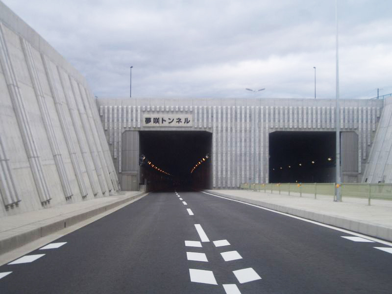
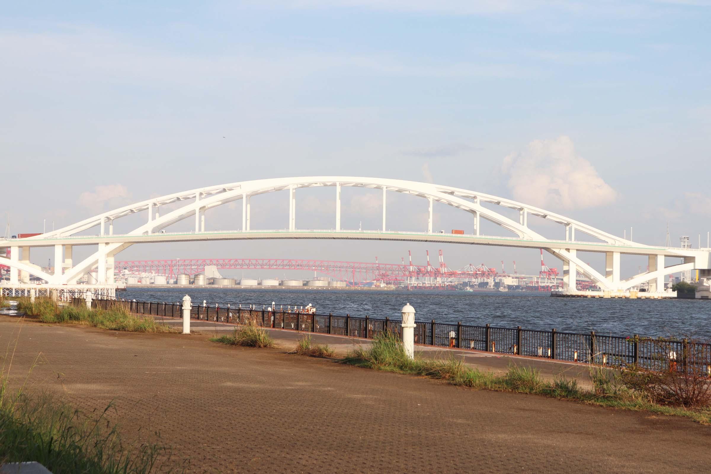
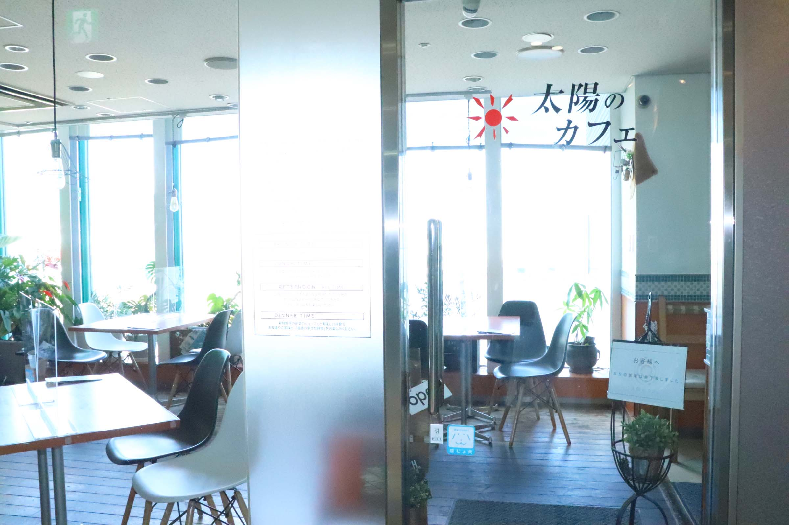
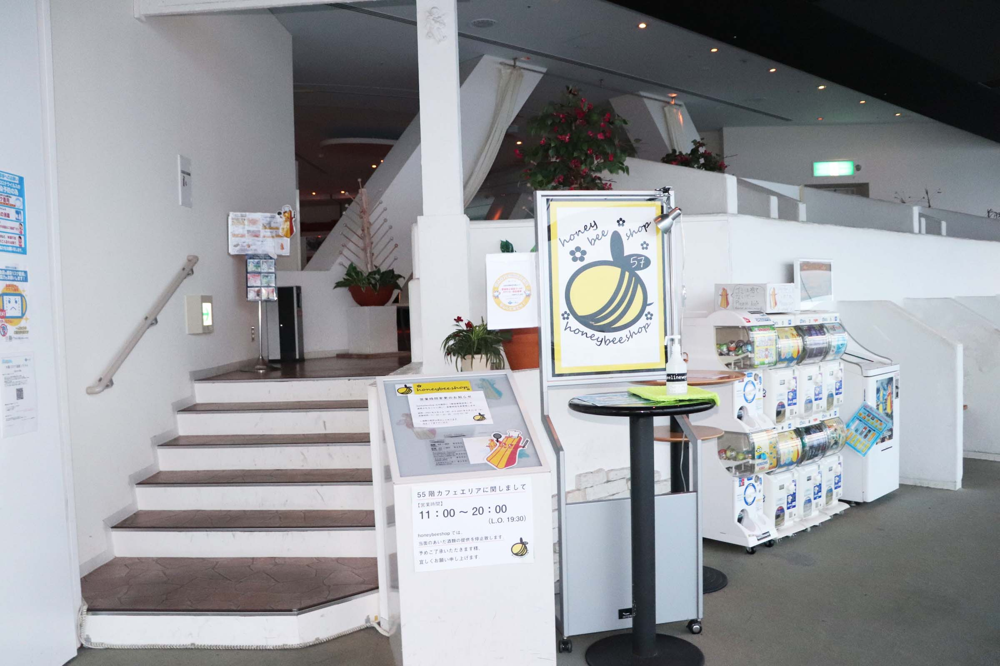
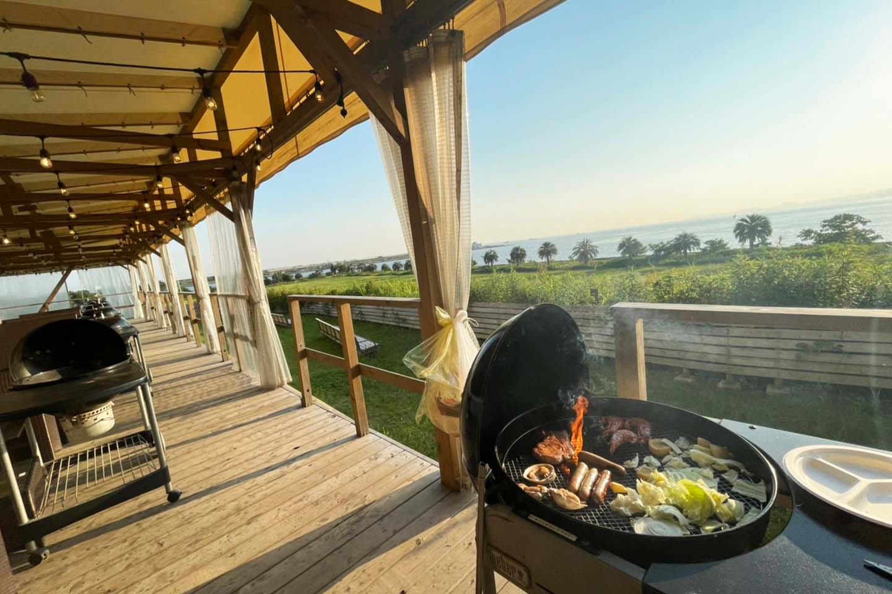
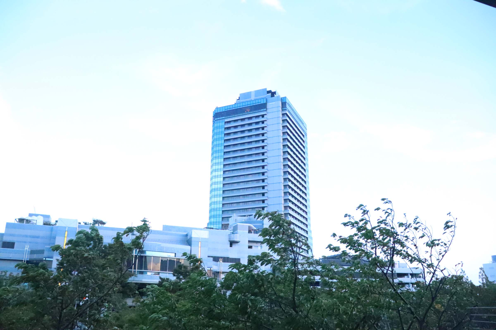
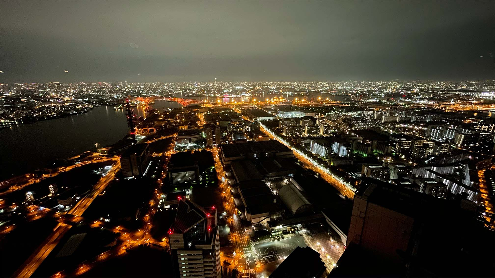
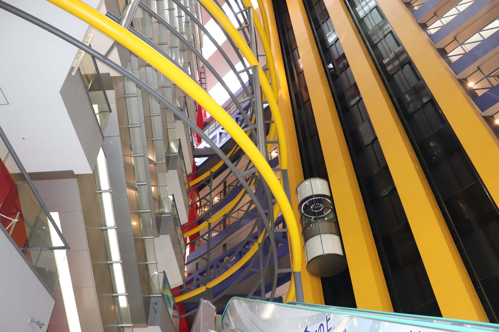

自然と都会が身近な、
大阪・南港。
What's Nanko?
大阪・南港は大阪府の湾岸エリアに広がる咲洲・夢洲・舞洲という3つの人工島の通称。
2025年、大阪万博の開催エリアであり、大阪市内でありながら自然が溢れるこの地は現在注目が集まっている。
咲洲
多くの人々が暮らす南港ポートタウンやコスモスクエア地区・大型商業施設であるATCや夜景で有名な大阪府咲洲庁舎など南港で最も栄えているエリア。

夢咲トンネル
夢洲
広大なコンビナートが広がり、まだ未発展な部分が多いエリア。2025年に開催される大阪万博は、この夢洲で開催されることになっている。

夢舞大橋
舞洲
プロスポーツチームの拠点が複数あり、スポーツが盛んなエリア。近年はグランピング施設やバーベキュー場など、レジャースポットが多くオープン。
EXPO 2025
いのち輝く未来社会のデザイン
2025年4月13日〜、夢洲で開催予定の大阪万博。
大阪で開催されるのは1970年以来55年ぶり。
万博の開催に伴いJRゆめ咲線・大阪メトロ中央線の延伸が予定されており、
大阪・南港エリアは更なる発展が見込まれている。
Eat
-

太陽のカフェ 南港店
ATC内 ITM棟5Fにて営業の、海が一望できるカフェ。
-

コスモタワーカフェ
大阪府咲洲庁舎の展望台内の絶景が見えるカフェ。
-

パームガーデン舞洲 by WBF
夕日100景にも選ばれた夕日を眺めながらバーベキュー。
-

ハイアットリージェンシー
ホテル最上階にあるレストランは、眺めだけでなく料理も絶品。
Recriation
-

さきしまコスモタワー展望台
日本で四番目の高さを誇る超高ビルからの絶景。
-
シーサイドコスモ
海の真横を歩くことができる。全長1.4kmの遊歩道。
-
舞洲スポーツアイランド
3つのプロスポーツチームの拠点。
-

ATC
1日中楽しめる!グルメからショップまで多くの店舗が存在。